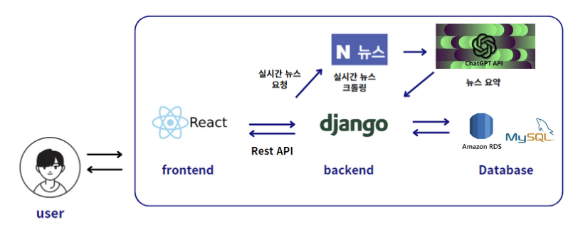
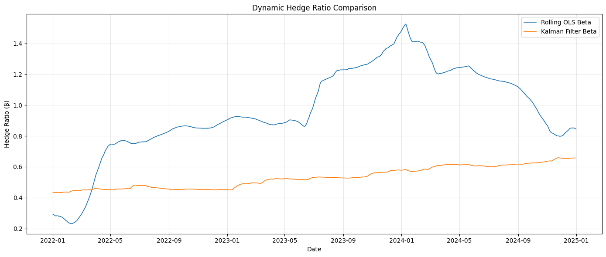
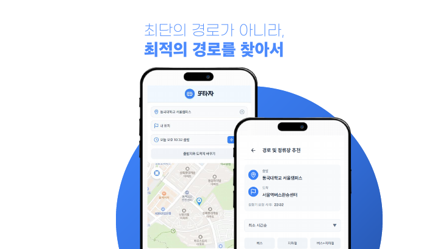
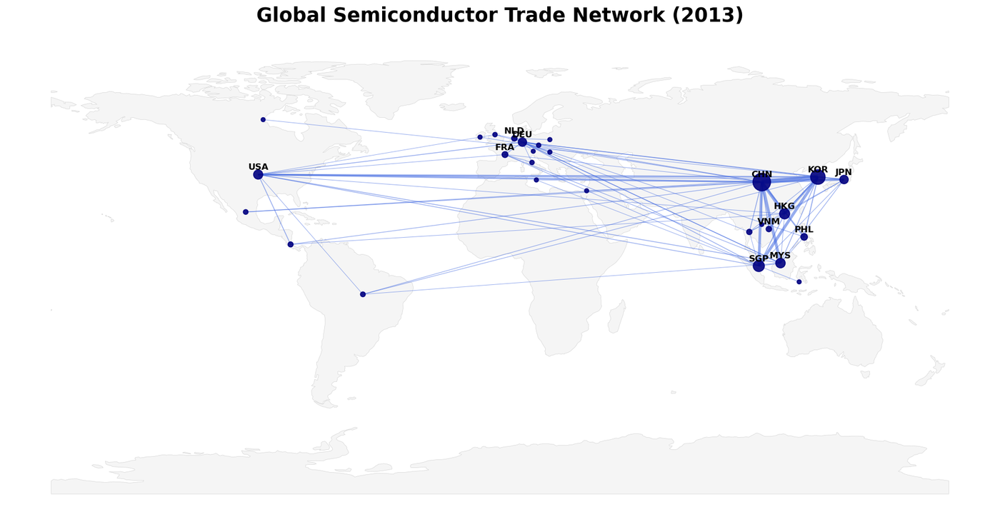

정영균
LLM 서비스, RAG, AI 에이전트 개발
공시 문서를 검색해 근거로 답하는 RAG 에이전트를 만들고, 평가셋으로 정확도를 비교하며 고쳤습니다. 이전 직장에서는 매일 하던 시장 브리핑 업무를 AI 에이전트로 자동화했습니다.
github.com/suipizzaslowstar916@naver.com
프로젝트
AI·LLM 서비스

DART 공시 리서치 에이전트
상장사 공시 질문에 원문 근거로 답하고, 답변 속 숫자를 원문과 코드로 대조하는 RAG 에이전트
마켓 브리핑 에이전트와 기록 조회 MCP 서버
매일 손으로 쓰던 회의용 시장 브리핑을 에이전트로 자동화하고, 쌓인 기록을 Claude가 SQL로 조회하는 MCP 서버로 확장

AI 뉴스 요약 서비스 Snap News
네이버 헤드라인 뉴스를 크롤링해 OpenAI API로 두 문장 요약하고, REST API로 제공하는 웹 서비스
데이터 분석·모델링

BTC–ETH 페어 트레이딩 전략 연구
헤지 비율 추정 방법을 여러 개 구현하고 같은 데이터·기간·지표로 백테스트해 비교한 실험형 연구

딥러닝 주가 예측 서비스 FinSight
LSTM·GRU·Transformer·XGBoost를 같은 조건에서 학습·튜닝하고 RMSE로 비교

광역버스 정류장 추천 서비스 또타자
정류장별 승차 인원을 Prophet·SARIMA·LSTM으로 예측·비교하고 승차 가능 확률로 바꿔 추천

글로벌 무역 네트워크 분석
UN 무역 데이터로 반도체·커피 무역을 네트워크로 비교. 같은 기준에서 연결 85개 vs 451개